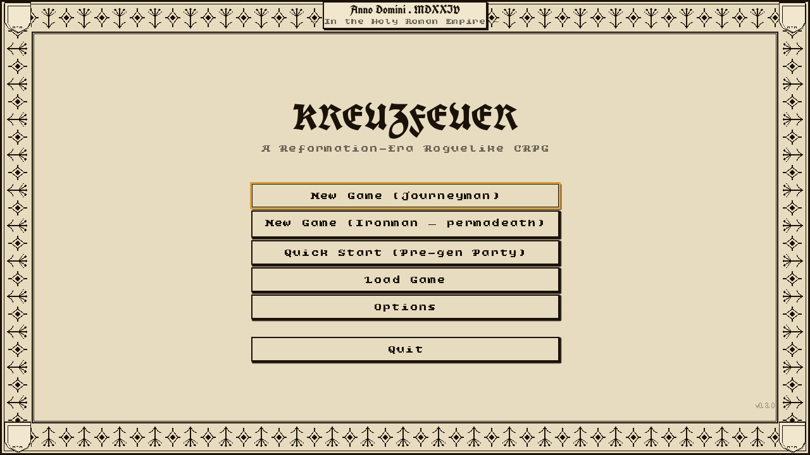
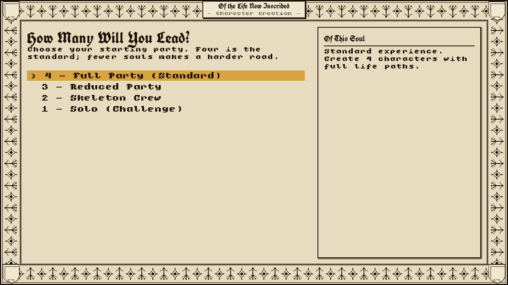
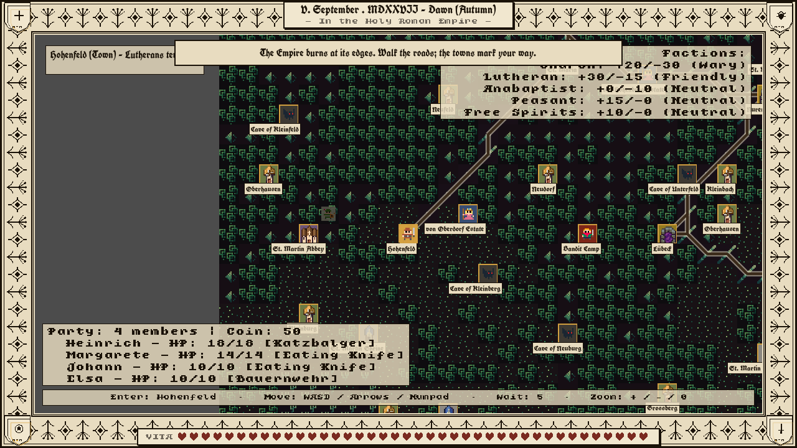
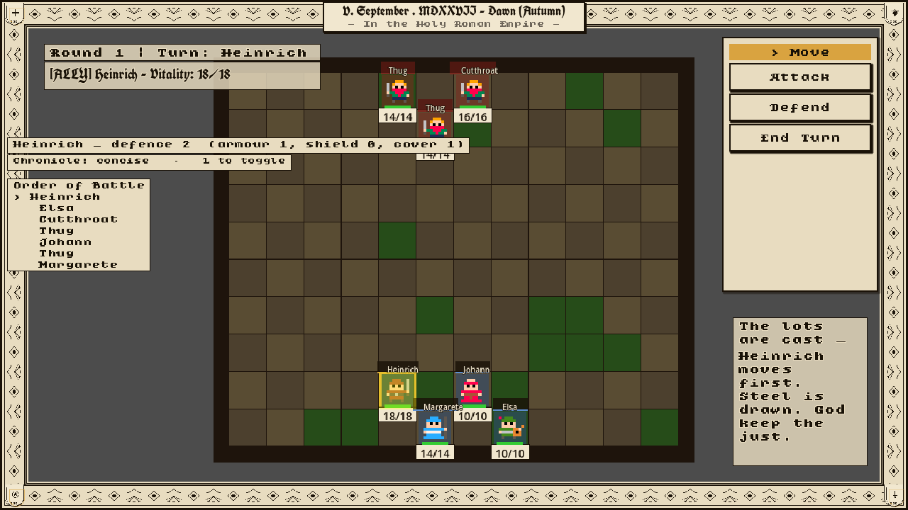
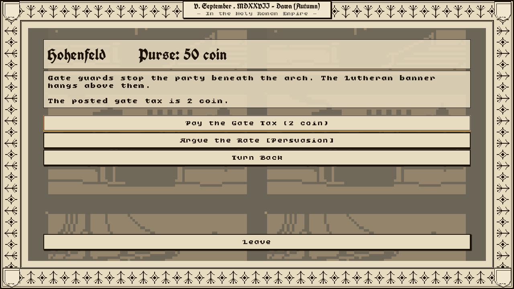
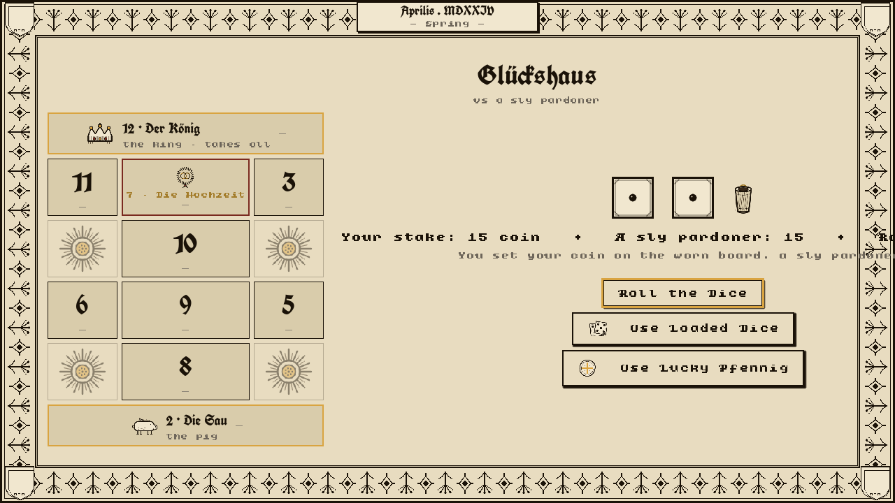
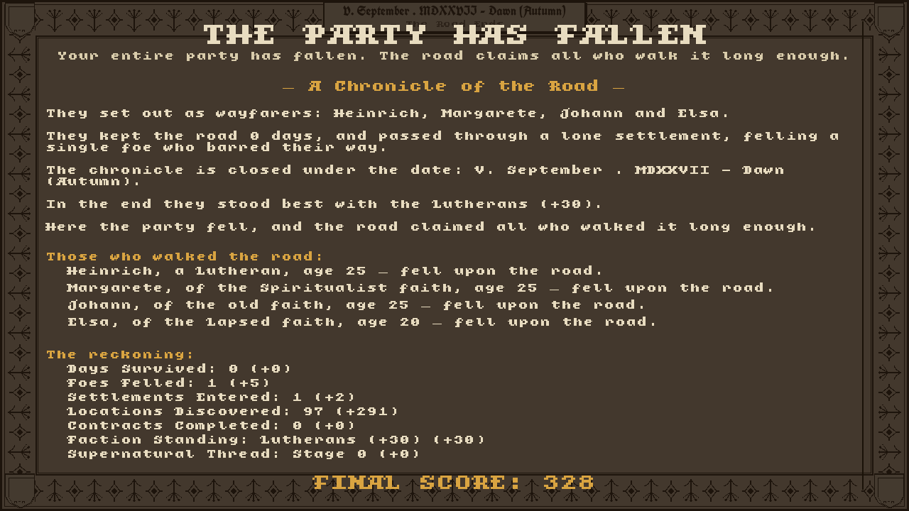
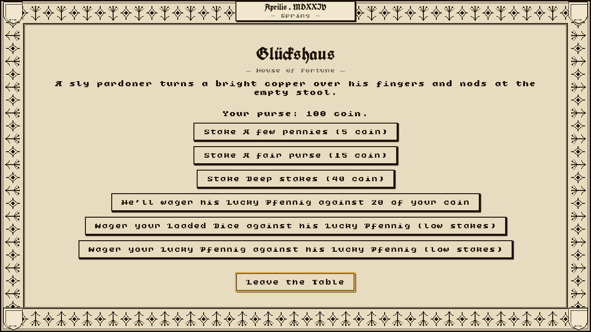

A roguelike of faith, steel, and the year the world turned over.
The Holy Roman Empire, 1524. Lead a band of the desperate and the devout across a Germany splitting along the fault lines of faith — through tavern and battlefield, plague road and burning village — while something older stirs beneath the wars of men.

Kreuzfeuer is a roguelike CRPG of the German Reformation — the spiritual heir to Darklands (MicroProse, 1992), built anew in the age of its successors. You take a band of ordinary people — a miner's son, a defrocked monk, a soldier home from the Italian wars — and walk them through a country coming apart. Towns close their gates by their faith. Roads turn to ambush. Every run is a chronicle: written as it is lived, closed under the date it ends.

Build a party from backgrounds, occupations, and faith. Who they were — where they were born, the trade they kept, the church they answered to — shapes what they can do, and what the world will let them attempt.
Four souls is the standard road. Take fewer, and the road turns harder.

Five powers contend for the soul of the land, and their fortunes shift with the historical tide. Your standing with each opens some doors and bars others — a Lutheran town that welcomes you is a Church abbey that will not.

Turn-based skirmishes where reach, armour, and morale decide the day. A blade meeting a gambeson is not a blade meeting plate; a man whose nerve breaks runs. Death, once dealt, is not undone.
The chronicle records each blow as it falls — "the lots are cast; God keep the just."

Period-grounded events without clean answers. Pay the gate tax or argue the rate; intervene at the burning village or pass it by. The road remembers what you chose.
And a hidden Witness keeps its own ledger — of the cruelties you allow to stand.
Under the wars of men runs a low, creeping mystery — easy to miss, hard to unsee once seen. It gathers, year upon year, toward the siege of Münster. Some who walk the road never notice. Some notice too late.

Dürer-woodcut art throughout, and a companion manual in the Darklands tradition — written to be read. In the taverns, sit down to Glückshaus: a real game of dice across a numbered board, with charms to win and coin to wager against a sly pardoner.

Play Journeyman and keep your saves, or Ironman and be granted one life only. Either way the road claims all who walk it long enough — and writes them down: days survived, foes felled, where they stood with the factions, how far the thing beneath had stirred.
Six impressions from the press.

Windows & macOS. Now in Early Access.